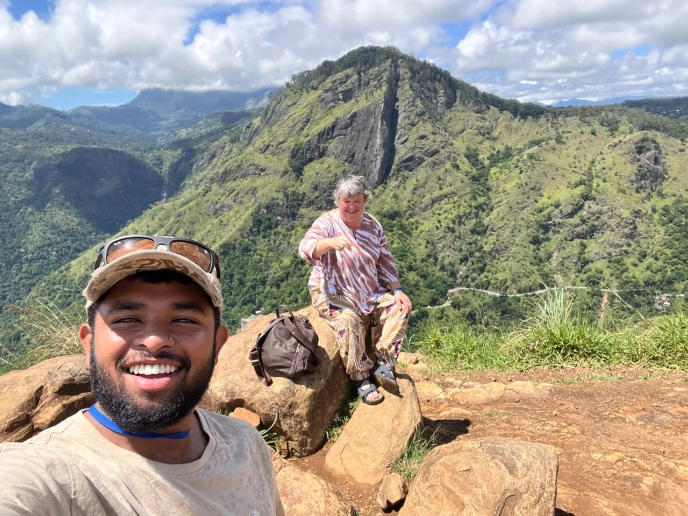
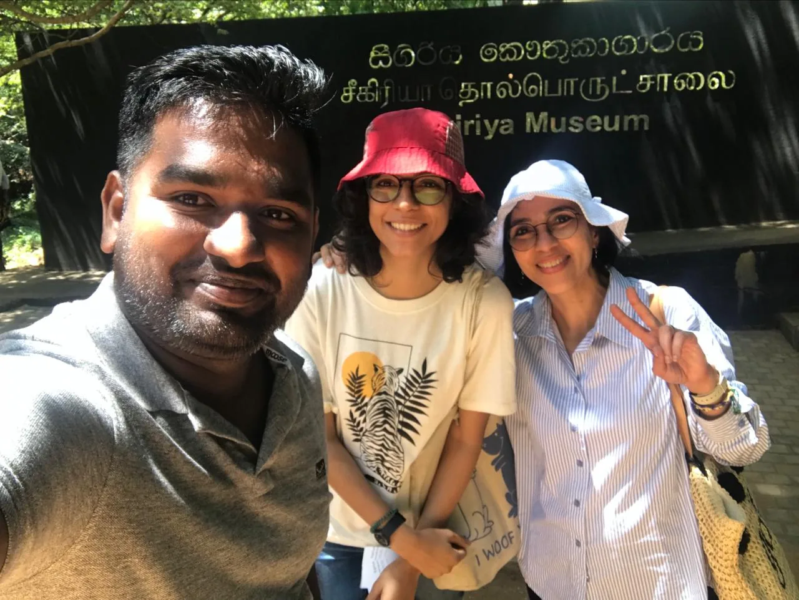
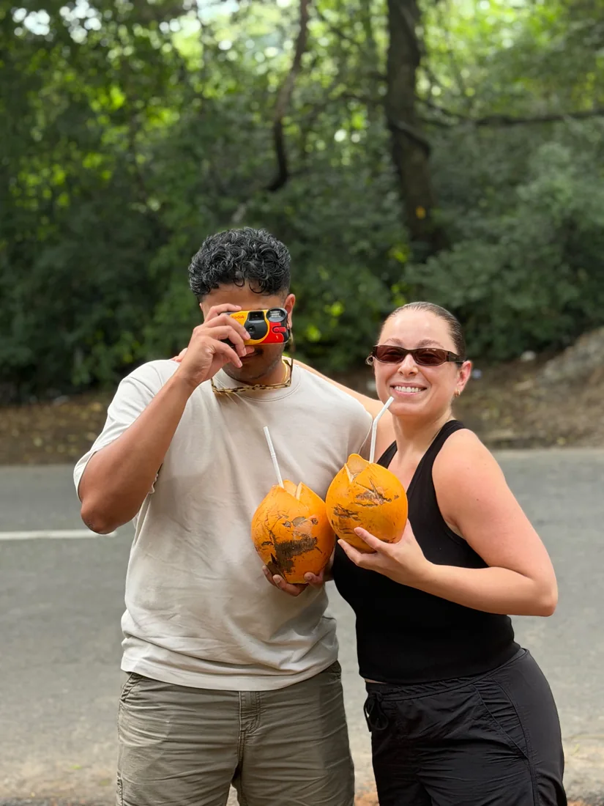

Moments from the road
Photos from journeys with Ranweli Tours, from tea country and temple visits to coast and roadside stops.
Out and about with Ranweli










Photos from journeys with Ranweli Tours, from tea country and temple visits to coast and roadside stops.


